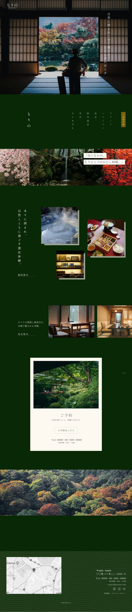
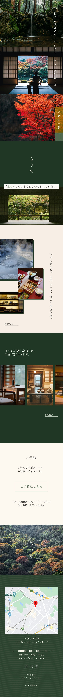

（つくったもの）

もりの
宿泊施設ホームページ
ホームページ
- （制作範囲） デザイン

- （制作期間） 2週間
- （使用ツール） Figma
-
（概要）
温泉付きの宿泊施設のHPを製作いたしました。
訪問者が安心して宿泊予約まで進められるよう、高級感・安心感・癒しが伝わるようデザインいたしました。 -

-
（課題）
自然に囲まれた癒しの魅力が伝わりきっておらず、スマホ対応と予約までの導線を整えることを目的に制作を依頼。
-
-
（デザイン）
-
自然のぬくもりを感じる落ち着いたカラー
緑や木の温かみを感じるトーンで、癒しの空気を演出。
派手さを抑えた配色で、自然と調和する上品な印象に。
宿の雰囲気がそのまま伝わる安心感あるデザインを意識。 -
スマホでも快適に見られる設計
スマホ版をメイン視点に、情報が見やすく整理された構成に。
指での操作性や読みやすさを重視し、心地よい閲覧体験を追求。
予約ボタンやメニュー位置なども直感的に使いやすく配置。 -
予約までの導線をスムーズに
宿泊プランや施設紹介から自然に予約へ誘導できる流れを設計。
視線の流れを意識したボタン配置で、迷わず行動できるデザインに。
写真・文章・導線が一体となって心地よく行動を促す構成。
-

